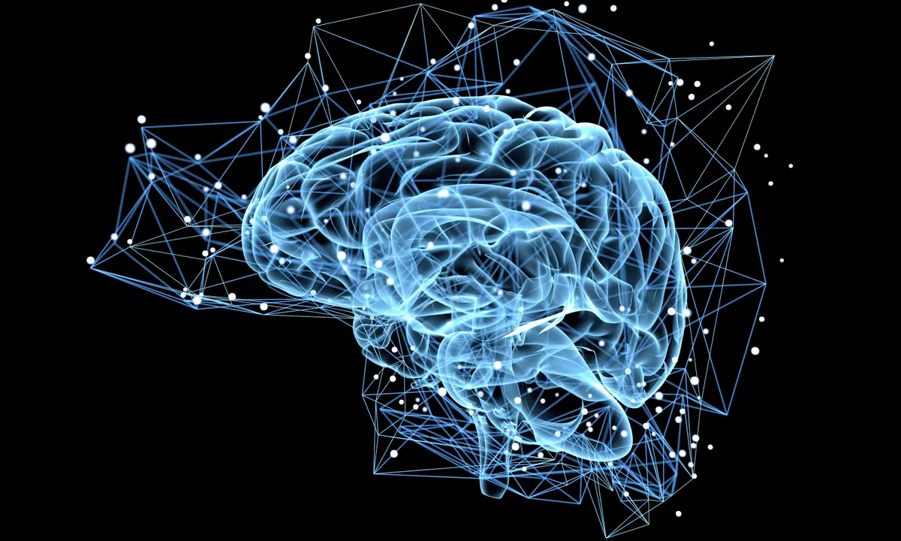

Neuroplasticity and Growth Mindsets!

What is Neuroplasticity?
Neuroplasticity is the capacity for our brain cells to change in response to our behavior.
Not only can humans alter the way their brain works, but by focusing our attentions on brain development we can also physically alter the structure of the brain.
Studies have proven that imagination and action are integrated. So introducing both practices can greatly speed up and improve gaining new skills.
Studies have proven that imagination and action are integrated. So introducing both practices can greatly speed up and improve gaining new skills.
How can I improve my neuroplasticity?
Just by thinking about the task, or running through a scenario in your brain you are calling on that specific neurochemical pathway, and therefore the more we practice the more we strengthen those neurochemical pathways making it easier for us to recall or repeat tasks.
"CELLS THAT FIRE TOGETHER, WIRE TOGETHER!"
Neuroplasticity changes requires five components:
- Challenge and Novelty: being new and not easy to learn.
- Intention: to have meaning, relevance or importance.
- Specific attention: focusing on an exact tasks.
- Reptition and Intensity: Short bouts of intense repetition
- Time: patience, patience, patience! Change tikes time.
Creating a plan for the skill you want learn will help you succeed. Here is my one for this course:
- Choose a skill you want to learn:
Software development. - Why do you want to learn this skill:
Two reasons: I want this challenge. Software development or being a 'technical' person hasnt been part of my identity and I have always felt like it was out of my reach. I don't like feeling this way.
I also have something missing in my career and think that somemthing as soothing as software development could be the answer, as coding is so calming and logical. - Have a plan:
I have created my learning plan. I allocate time in my calendar specifically for this. I plan my breaks. - Check in:
First thing I do is create a plan for my day and what I am looking to achieve. At the end of the day I reflect on my day, update my goals and temperature check how I am going. - Plan for lapses:
I'm a big believer in automatic thoughts, and using that practice to shift your narrative. Right now its important for me to have the blind faith that I will get there. It's so fortunate that this is the consistent messaging within this course.
Excepts taken from and article on Accelerate Learning Community; Marcie Hopkins, University of Utah Health.
Growth Mindset
'Growth Mindset' the idea that we can grow our brain's capacity to learn and to solve problems. The opposite of a growth mindset is a 'Fixed mindset'. Which suggests that our capability is limited and immovable.
"THE POWER OF YET, NOT THE TYRANNY OF NOW." - Psychologist Carol Dweck.
According to Carol, if we re-wire the way we think about effort and difficulty then a task could be challenging, instead of being too hard OR I am learning from this experience, instead of this is a waste of my time.
This subtle change in our mindset can greatly impact our motivation to push through and keep trying to work it out. For software development this is imperative as there is such a strong learning curve, and for many it is a brand new skill we are developing. Software Development is typically not easy and set backs are almost guaranteed. Having a growth mindset will help with fending of discouragment and enable us to bounce back quicker from disappointment.
To summarise, having a growth mindset means:
- You believe that achievements are down to effort and not just inherent talent.
- You are willing to learn from your mistakes and fine value in criticism.
- You believe that your intelligenvec and ability can be developed.
- You are willing to ask questions and admit when you dont know something.
- You seek out challenging tasks and take on risks.
Here is a great article on Growth Mindset.
Adjustments to my learning plan
My biggest challenge will be the push-pull of between feeling 'dumb' and knowing that I need to ask for assistance. My background is not super techy and I think that strongly contributes to this idea of a fixed mindset.
I'm going to spend far more time thinking about and practicing what I have learned to make sure that it 'sinks' in. I think learning about the science behind it has really reaffirmed my need to do this.